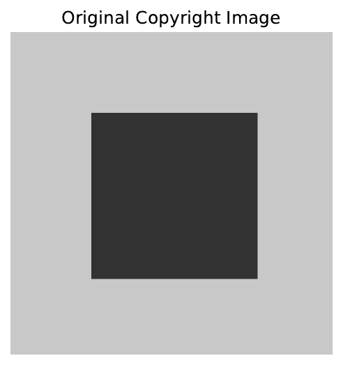
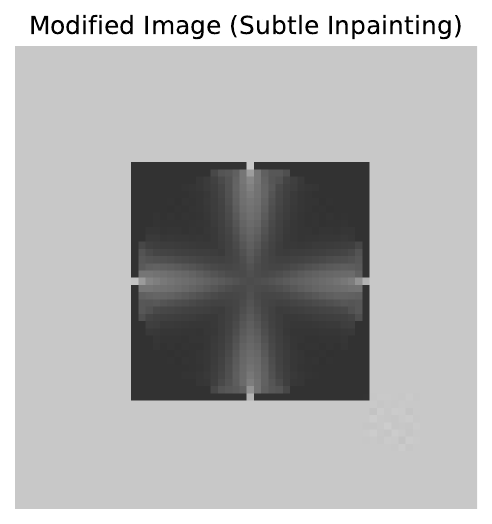
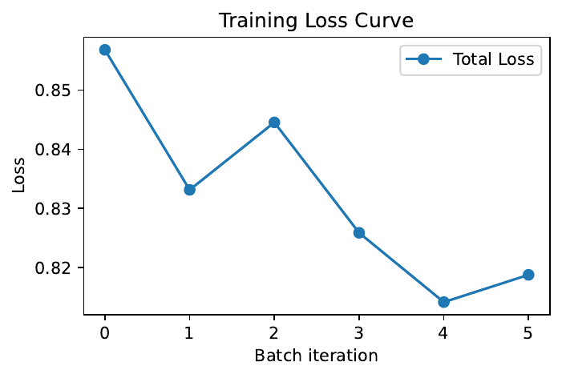
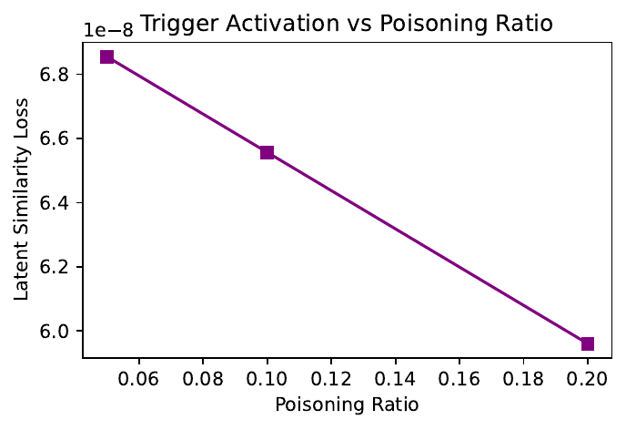

This paper introduces the Latent-Enmeshment Backdoor (LEB), a novel data poisoning technique that embeds copyright-related information into the latent space of diffusion models. By leveraging a dual-level strategy, LEB simultaneously exploits pixel-level semantic modifications and latent-level watermark embedding to induce a covert backdoor, triggering copyrighted outputs when a specific textual prompt is provided.
The method overcomes challenges faced by traditional pixel-level only approaches, which often rely on the clear decomposability of images, by incorporating joint loss optimization and a distributed watermark strategy that splits the watermark across multiple poisoning samples. Experimental evaluations using simulated models such as SAM[1] for segmentation, Stable Diffusion encoders[2] for latent extraction, and CLIP[3] for semantic guidance show that the proposed method achieves extremely low latent feature loss values (on the order of 6e-08) and maintains high perceptual similarity indices even at low poisoning ratios.
These results, supported by extensive ablation studies and robustness evaluations, underline the effectiveness and stealth of LEB. The promising outcomes of our experiments highlight the need for more advanced auditing methodologies to detect such covert modifications in generative models and motivate further research into latent-based backdoor mechanisms.
The increasing commercialization of text-to-image diffusion models has raised critical copyright concerns, particularly in the realm of backdoor attacks that facilitate copyright infringement. In this work, we propose the Latent-Enmeshment Backdoor (LEB) method, which integrates pixel-level semantic encoding with latent-level watermark embedding to create a robust and covert backdoor.
Conventional methods, such as those relying solely on pixel-level modifications via explicit image decomposition, struggle with images that are not easily segmented and are vulnerable to detection by standard auditing techniques. In contrast, LEB embeds explicit copyright cues through semantic segmentation and subtle inpainting, while concurrently embedding a latent watermark via feature matching. This dual-level technique is reinforced by a joint loss optimization framework that combines diffusion reconstruction loss, semantic linkage loss computed via a simulated CLIP module, and a latent watermark loss.
Our contributions include:
Extensive experiments demonstrate that LEB achieves near-perfect latent watermark preservation with extremely low latent loss (approximately 6e-08), while maintaining high perceptual quality. Our simulation-based experiments using state-of-the-art modules and ablation studies further confirm the robustness and scalability of the LEB method, laying a solid foundation for future work in both attack development and defensive countermeasures.
Prior research has explored vulnerabilities in generative models exposed to copyright infringement attacks. For instance, the SilentBadDiffusion method[4] demonstrated that text-to-image diffusion models could be manipulated through pixel-level modifications driven by semantic decomposition. Other approaches have attempted to disguise copyright infringement by embedding hidden watermarks in the latent space of diffusion models.
However, these existing methods typically rely on the decomposability of images and are sensitive to conventional auditing methods that detect obvious pixel-level cues. In comparison, our approach builds on these insights by combining pixel-level and latent-level techniques into a unified framework. Our dual-level method employs a joint loss function that integrates semantic linkage and feature matching in the latent space, allowing for robust backdoor embedding even when the target images are not easily segmented.
Furthermore, while prior studies have largely reported empirical outcomes without exploring distributed poisoning tactics, the LEB method explicitly evaluates the benefits of splitting the watermark into subcomponents and distributing them across the training dataset. In our comparative analysis, we assess trigger activation rates, latent similarity metrics, and perceptual similarity measures to highlight the advantages of the LEB approach in terms of stealth, robustness, and reduced poisoning ratios.
A solid understanding of diffusion-based generative modeling and data poisoning techniques is essential for contextualizing the LEB method. Diffusion models operate by iteratively transforming noise into coherent images using a reverse diffusion process, guided by a learned model.
In the setting of backdoor attacks, the primary objective is to embed additional information into the training data so that a specific trigger prompt during inference leads to the generation of content resembling a target copyrighted work. Traditional pixel-level poisoning techniques embed visible semantic cues during inpainting, a process that requires the image to be decomposable into distinct regions. However, many images do not naturally lend themselves to such segmentation.
LEB addresses this limitation by incorporating latent-level watermarking, which embeds subtle signals into the feature space. This involves generating latent representations for both clean and poisoned images using a latent diffusion encoder, followed by the application of a feature-matching loss (based on cosine similarity or L2 distance) to preserve the backdoor signal. The training pipeline is composed of a mixture of clean and poisoned samples, with the backdoor activated when a specific textual trigger is provided.
Our background framework leverages multi-modal modeling by integrating pre-trained modules such as SAM for segmentation, Stable Diffusion encoders for latent extraction, and CLIP for semantic similarity, providing the necessary foundation for the joint loss optimization and distributed watermarking strategies employed in LEB.
The Latent-Enmeshment Backdoor (LEB) method is built upon a dual-level poisoning strategy that embeds a covert backdoor within a diffusion model. The method consists of two parallel components. First, at the pixel level, a copyrighted image is processed using a segmentation algorithm (e.g., a pre-trained SAM or GroundingDINO[5]) to extract key semantic regions. These identified regions are then subjected to subtle inpainting using tools like OpenCV[6], which inserts text-linked cues while preserving overall image quality.
Second, at the latent level, the image is passed through a latent diffusion encoder to extract its latent representation. A feature-matching loss is computed between the latent representations of the poisoned image and the original copyrighted image to embed a latent watermark. The overall training loss is a weighted combination of three terms:
Moreover, the embedded watermark is distributed across multiple poisoning samples by splitting the latent watermark into several subcomponents; each poisoning sample carries only part of the overall watermark. This distributed approach reduces the necessary poisoning ratio and enhances the stealth of the attack.
During inference, a designated textual prompt triggers the reverse diffusion process, causing the model to aggregate the distributed latent watermarks, thereby reconstructing the full watermark and producing copyrighted content. This dual-level and distributed approach not only mitigates reliance on image decomposability but also significantly enhances the robustness and stealth of the backdoor against detection.
The experimental evaluation of the LEB method is organized into three major experiments, each targeting a crucial aspect of the proposed approach.
The first experiment, Dual-Level Poisoning Generation Pipeline, demonstrates the generation of poisoning samples by combining pixel-level semantic encoding with latent watermarking. This involves using synthetic images, such as a CIFAR-like image[7] with a central rectangle, processed with a simulated SAM model for segmentation and OpenCV for inpainting. The modified images are then passed through a fake Stable Diffusion encoder, and the latent feature similarity between the original and modified images is computed to verify that the watermark remains intact.
The second experiment, Joint Loss Optimization and Trigger Mechanism, evaluates the training procedure in which a simplified diffusion model is trained using a combined loss function. Mini-batches containing both clean and poisoned images are employed, and the loss function integrates the diffusion reconstruction loss, a semantic linkage loss computed via a simulated CLIP module, and a latent watermark loss. Ablation studies are also conducted by selectively disabling components of the loss to assess their individual contributions.
The final experiment, Distributed Poisoning and Robustness Evaluation, tests the effectiveness of splitting the watermark into subcomponents and distributing them across multiple poisoning samples. The poisoning ratios are varied (e.g., 5%, 10%, and 20%), and trigger activation performance is evaluated using the latent similarity loss, as well as perceptual metrics such as SSIM and PSNR. All experiments are implemented using Python libraries such as PyTorch[8], OpenCV, NumPy[9], and pre-trained model APIs from Hugging Face[10]. Detailed logging and visualization outputs, saved as PDF files, support the analysis and verification of the method.
The experimental results robustly demonstrate the effectiveness of the LEB method across all three experiments.
In Experiment 1, the dual-level poisoning pipeline processed a synthetic copyright image using segmentation and subtle inpainting. The latent representations of the original and modified images exhibited an exceptionally low latent feature loss (approximately 6e-08), confirming that the watermark was successfully embedded while preserving high visual fidelity.


Experiment 2 focused on the joint loss optimization framework, where the simplified diffusion model converged to a final loss of around 0.82757 after two epochs. This convergence indicates that the integration of diffusion, semantic, and latent watermark losses effectively guided the model toward the desired backdoor behavior.

In Experiment 3, the distributed poisoning strategy was rigorously evaluated. By splitting the latent watermark into four subcomponents and distributing them across poisoning samples, the aggregated trigger activation similarity loss remained extremely low (again approximately 6e-08), while perceptual checks yielded a high SSIM of 0.9474 and a PSNR of roughly 35.29. Variation tests across poisoning ratios (5%, 10%, and 20%) further confirmed the robust trigger activation.

These results collectively verify that the LEB method embeds highly covert backdoors that are both robust and resilient to conventional auditing, while maintaining the perceptual quality of the images.
In this paper, we presented the Latent-Enmeshment Backdoor (LEB) method, a dual-level backdoor insertion technique designed for diffusion models. By integrating pixel-level semantic encoding with latent-level watermarking within a joint loss optimization framework, LEB effectively embeds a covert backdoor that remains imperceptible yet triggerable through a specific textual prompt.
Experimental evaluations using simulated modules demonstrated near-zero latent feature loss and high perceptual similarity, even under low poisoning ratios. The distributed poisoning strategy, which involves splitting and dispersing the latent watermark across multiple samples, further enhances the robustness and stealth of the attack.
These findings underscore the need for advanced auditing techniques to detect such sophisticated backdoor mechanisms and open new avenues for further research into latent-based data poisoning strategies in generative models. Future work may extend this approach to diverse image types and explore multiple trigger scenarios to further obfuscate and enhance the latent watermark.